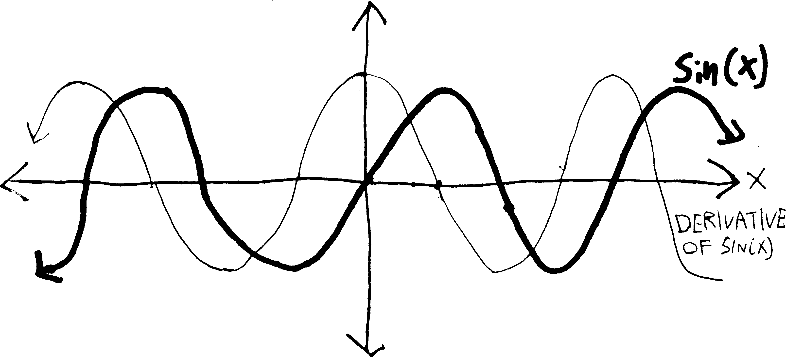
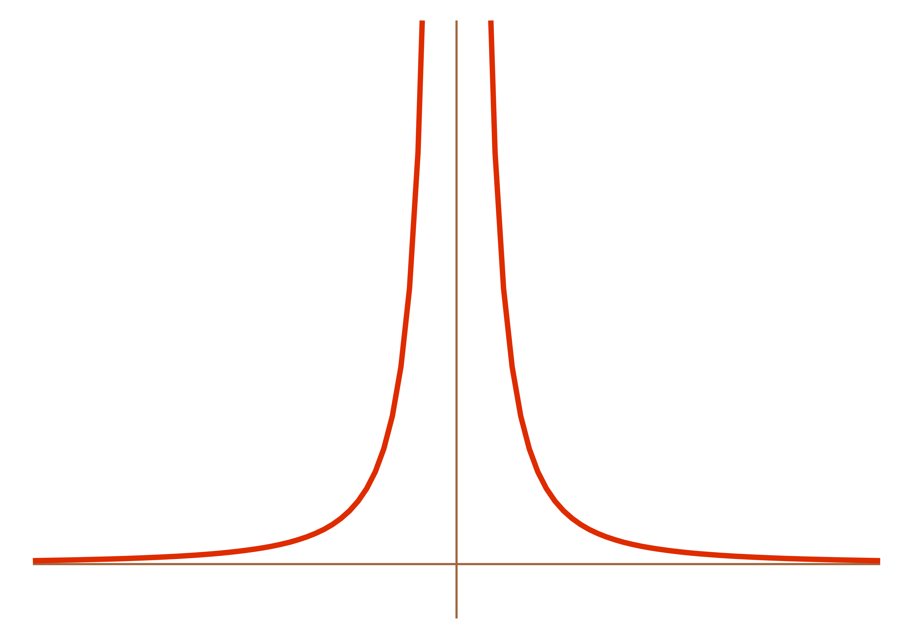
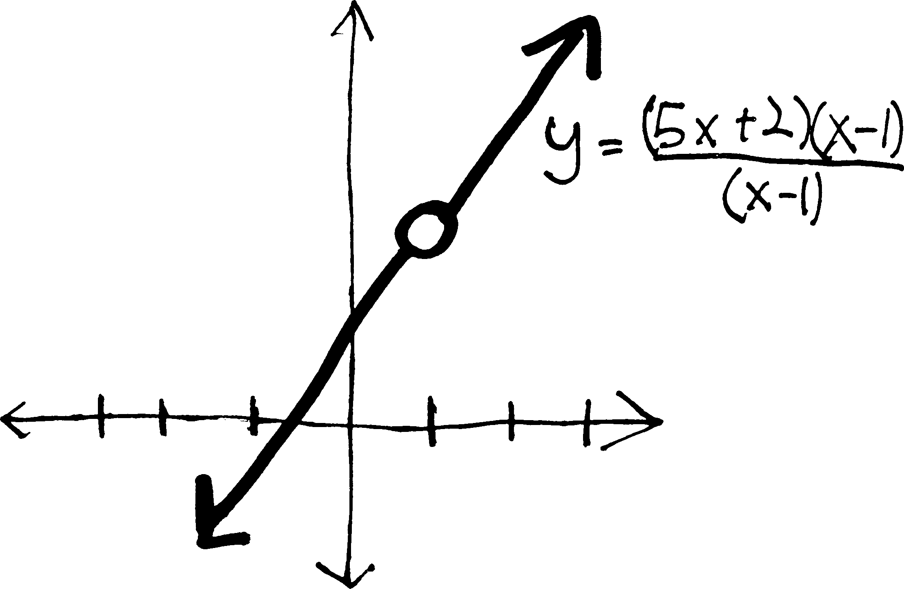
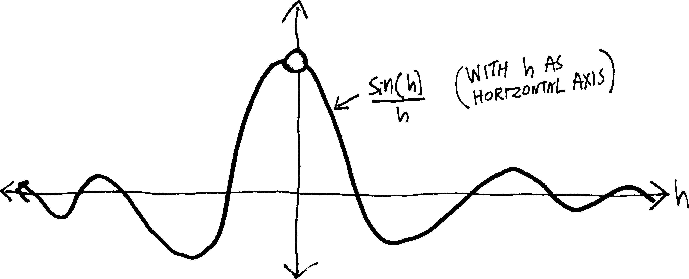
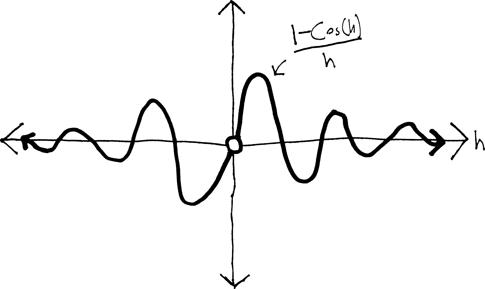
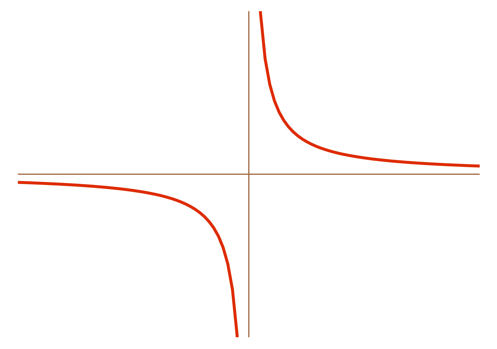
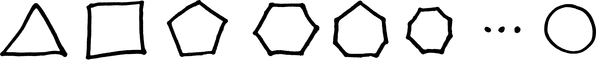

limits, intuitively
So far, we have been quite good at finding the derivatives of functions by plugging the functions into Fermat’s difference quotient, rearranging, and then letting \(h=0\). This is how we found the derivative of \(x^2\) and \(1/x\); in fact, our proof of the formula \(\displaystyle \frac{d}{dx}x^n = nx^{n-1}\) told us that this general method works for any rational function, insofar as we had to do nothing special about the \(h\) in that proof.
So let’s move on to other functions. What about trig functions? We can see, just by sketching it, that the derivative of \(\sin(x)\) looks kind of like \(\cos(x)\) (potentially with a vertical expansion/compression):

But can we calculate it? Presumably it’s not too hard. We’ll just plug it into Fermat’s little machine, and then see what happens when \(h\) gets small: \[\frac{\sin(x+h) - \sin(x)}{h}\] But, well, this looks kind of nasty. Unlike with, say, \(x^2\), we can’t ``multiply out’’ the \(\sin(x+h)\), or distribute it. It’s certainly not equal to \(\sin(x) + \sin(h)\). But we can simplify it using that formula we proved in trig: \[\sin(\alpha + \beta) = \cos(\alpha)\sin(\beta) + \sin(\alpha)\cos(\beta)\] If we apply that here, we’ll get: \[\begin{align*} \frac{\sin(x+h) - \sin(x)}{h} &= \frac{\cos(x)\sin(h) + \sin(x)\cos(h) - \sin(x)}{h} \end{align*}\] Which, if we do some rearranging, is \[\begin{align*} &= \cos(x)\frac{\sin(h)}{h} - \sin(x)\frac{1 - \cos(h)}{h}\\ \end{align*}\] But then what do we do? As \(h\) gets really small, \(\sin(h)/h\) gets close to… \(0/0\)? And \((1-\cos h)/h\) also approaches \(0/0\)? What does that mean? \(0/0\) is undefined. It isn’t anything. It’s a divide-by-zero error. Um. This is bad.
Really, really, really bad.
We want to take the derivative of sine. We want to find its slope. But, uh. This is the equivalent of going to the grocery store and accidentally running over someone with your car. It was just a quick trip to the store! Nothing bad was supposed to happen! No one was supposed to get hurt! We were supposed to find the derivative of \(\sin(x)\) as easily as we found the derivative of \(x^2\)!
We are faced with a grave problem: we cannot get the \(\sin(h)/h\) and the \((1-\cos h)/h\) to go away! We can find the average slope of sine between \(x\) and \(x+h\), but if we want to find the exact slope–the derivative—we get this divide-by-zero error. Both the top and the bottom go to zero. This is bizarre. What sort of exotic derivative could result? What strange creature could it be? And yet we can see, from our sketch, that the derivative should not be exotic at all—it should be just cosine, or some variant thereof.
Maybe it’s just that sine doesn’t have a derivative. That it’s weird? That, for some reason, there’s something about it that prevents us from taking its derivative? But it’s not that weird. It just goes up and down and up and down and up and down ad infinitum. What could be more boring? Surely it must have a derivative. I mean, we have a picture of it! The derivative should be cosine, or at least some close relative of cosine! And yet…
Maybe the problem is more fundamental. Consider Fermat’s difference quotient. It gives us the average slope of a function between two points, \(x\) and \(x+h\). What happens as \(h\) gets really small? \[\frac{f(x+h)-f(x)}{h} \xrightarrow[\text{gets really small}]{\text{as }h\text{ gets}} \frac{f(x) - f(x)}{0} = \frac{0}{0}\] WE GET A DIVIDE-BY-ZERO ERROR. Always. Whenever we use Fermat’s difference quotient. This is not a problem specific to sine. IT WAS THERE ALL ALONG! With the other functions we dealt with, were able to shove this problem under the carpet, behind the couch, into the closet—with \(x^2\) and \(1/x\) and whatnot we were able to cancel things out and fiddle with it so that we could make \(h=0\) without creating any divide-by-zero problems. BUT WE WERE DIVIDING BY ZERO ALL ALONG. Our very fundamental formulation of a derivative creates a divide-by-zero error. This is bad. Extremely bad. We can’t make it zero, because then we’d be dividing by zero, and we can’t not make it zero, because then we wouldn’t have the precise derivative—we’d just have the average slope between two points on the function.
This is the same problem, note, as “how can a single point have a slope?” If \(h=0\), then we effectively are finding the slope at not two points \(x\) and \(x+h\), but at one point, \(x\).
Clearly we need to better understand what we actually are doing when we say “as \(h\) gets small” or “as \(h\) goes to \(0\).” Obviously we can’t just be plugging in zero. But then what? Can we never take derivatives? That would be bad. Is everything we know wrong? That, too, would be bad.
Perhaps we should first ask ourselves: what does happen when we divide by zero? Recall that there are two possibilities.
Usually what happens is that things become bizzare—we get vertical asymptotes. Consider, for example, \(1/x^2\).

What’s happening to \(1/x^2\) doing at \(x=0\)? Nothing. It doesn’t exist at \(0\). But really near \(x=0\), it’s getting really big. The closer and closer we get to \(x=0\), the bigger and bigger \(1/x^2\) gets. It doesn’t really exist at \(0\), unless you want to say that’s infinity, but we do have a sense of what it’s doing near \(0\). And this is the general trend—if, in the course of some function, we have \((\text{some number})/0\), we get a vertical asymptote.
But that’s not the only option. Consider, for example: \[f(x) = \frac{5x^2-3x-2}{x-1}\] This doesn’t exist at \(x=1\). But it doesn’t have a vertical asymptote at \(x=1\). Instead, it has a hole, because if we factor it, we get: \[f(x) = \frac{5x^2-3x-2}{x-1} = \frac{(5x+2)(x-1)}{(x-1)}\]

What’s going on is that 99% of the time, this function looks exactly like \(y=5x+2\). Everywhere other than \(x=1\), the \((x-1)\) factors will cancel out and go away and we’ll just have \(5x+2\). But at \(x=1\), the \((x-1)\) factors will give us \(0/0\)—and that’s certainly not \(1\). \(0/0\) doesn’t cancel out. It causes the universe to explode. So we get a hole at that point. At that instant that \(x=1\), the function blips out of existence, due to the divide-by-zero error. It wants to exist at \(x=1\). It should exist at \(x=1\). We can make it as close to \(x=1\) as we want, so long as we don’t make it actually \(1\).
And this is exactly what is going on with our derivative. \(\sin(h)/h\) turns into \(0/0\) when \(h=0\); \((1-\cos h)/h\) also turns into \(0/0\) when \(h=0\). They both have holes. Which, in a sense, is a good thing. See, it would be a problem if they had, like, vertical asymptotes, because then what would the derivative be? infinite? undefined? But the thing about a hole is that… all it does is affect that one tiny point. With a vertical asymptote, not only is the function undefined at that point, it’s shooting up to infinity (or \(-\infty\), or something) nearby. The divide-by-zero error affects a whole region of the function. But with a hole, we can put it back when no one’s looking, and pretend that it never was a hole. With \(f(x) = \frac{5x^2-3x-2}{x-1}\), we can just cancel out the \((x-1)\)’s, get \(f(x) = 5x +2\), and {}. You’ve read the Inferno, right? Does Dante assign to a circle of hell the people who fix removable discontinuities in functions (which is the technical name for “pretending a function with a hole doesn’t have a hole”)? Of course not.
Anyway. Let’s talk about \(\sin(h)/h\) first. It has a hole at \(h=0\). It doesn’t exist when \(h=0\). But it wants to exist at \(h=0\). It should exist there. The only question is, what should it be? It wants to be something at \(h=0\), but what?
We’re already comitting one sin, so we may as well commit another. Let’s use a calc***tor. If we graph \(\sin(h)/h\), we get something like this:

(Using the calculator is going to be our little secret, OK? Don’t tell your parents about it.) So as \(h\) gets closer and closer to \(0\), \(\sin(h)/h\) gets closer and closer to some number. That number, in fact, though I haven’t labelled it on this graph, is \(1\). It gets closer and closer to \(1\). It doesn’t actually reach \(1\), but it does get close (infinitesimally close?)
Thus, if we’re trying to find the derivative of \(\sin(x)\)—which we are—we can say that as \(h\) gets smaller and smaller, \(\sin(h)/h\) gets closer and closer to \(1\), and so the first half of our derivative will be: \[\begin{align*} & = \cos(x)\cdot\frac{\sin(h)}{h} - \sin(x)\cdot\frac{1-\cos (h)}{h} \\ & \quad \text{as }h \downarrow \text{gets small} \\ & \cos(x) \cdot 1 - (\text{etc.}) \end{align*}\] But we still need to figure out what \((1-\cos h)/h\) turns into as \(h\) gets really, really small. If we look at a graph of it, we see:

\((1-\cos h)/h\) does not actually exist when \(h=0\). But as \(h\) gets closer and closer to \(0\), \((1-\cos h)/h\) gets closer and closer to \(0\). So then we can say:
\[\begin{align*} (\sin x)' & = \frac{\sin(x+h) - \sin(x)}{h} \\ &= \frac{\cos(x)\sin(h) + \sin(x)\cos(h) - \sin(x)}{h}\\ &= \cos(x)\cdot\frac{\sin(h)}{h} \,\,-\,\, \sin(x)\cdot\frac{1 - \cos(h)}{h}\\ & = \cos(x)\cdot\frac{\sin(h)}{h} \,\,-\,\, \sin(x)\cdot\frac{1-\cos (h)}{h} \\ & \quad \quad \downarrow \text{as }h \text{ gets small} \downarrow\\ & \cos(x) \cdot 1 \,\,-\,\, \sin(x)\cdot 0 \\ &= \cos(x) \end{align*}\] And so the derivative of \(\sin(x)\) is just \(\cos(x)\). !!!
(Of course, this is not really a proof, since it relies on these graphs. But it gives you an idea of what’s going on when we take derivatives—not just the derivative of sine, but any derivative, since, due to Fermat’s difference quotient, we will always have this \(0/0\) problem.)
More generally, though, what is it we are doing here? What is it that we mean when we say “as \(h\) gets really, really small”? What is this value of \(h\) that can simultaneously be small enough to be \(0\), but not so small that we can’t divide by it?
We need to better understand what’s going on here. And in order to do so, we’re going to have to take a bit of a detour. Well—detour isn’t quite the right word. Because there’s no better way. Ever had it happen when you’re crossing the Khyber Pass that there’s a rockslide and part of the road is blocked with boulders? Well, sometimes, you can get around simply by scrambling over the boulders, and then calling a taxi from Kabul on the other side. But sometimes the rocks are too steep and too unstable. It’s too dangerous. And so you have to get in your car, put it in reverse, and take an entirely different route.
That’s what we need to do now. We’re still trying to get to this wonderful world where we can see derivatives in their full glory. But we can’t go up this canyon any further. We’d never make it to the top of the mesa. We need to go back and take a different route. We need to figure out what’s actually going on when we take a derivative. And I guess we should start here:
The usual gloss on calculus is that despite all the formulas and the formalism, it’s about just two ideas: slopes and areas. But in a more fundamental sense, calculus is about just one idea: what happens when we tangle with the infinite?
Slopes and areas, you see, are just applications of that tangling. We find the slope of a curvy line by considering it as an infinite number of infinitely-short straight lines; we find the area of a curvy shape by splitting it up into an infinite number of infinitely-small rectangles. The idea underlying all of this is the idea of the infinite.
This gives us two interwoven questions:
- What happens to things as they become infinite?
- What happens to things as they become infinitesimal?
The somewhat less dangerous way to phrase this—because if you start using the word “infinite,” certain theologians and philosophers get upset—is:
- What happens to things as they get really, really big?
- What happens to things as they get really, really small?
We could ask:
What is the largest number1 smaller than 2?
or analogously:
What is the largest number greater than 2?
These two questions seem different. But they’re not.
Implicitly, we have been talking about this all year. That’s all we talk about with when we talk about asymptotes. Consider, for instance, \(1/x^2\). This has both a vertical asymptote (at \(x=0\)) and a horizontal asymptote (at \(y=0\)):
By “it has a vertical asymptote at \(x=0\),” all we really mean is:
“as \(x\) gets closer and closer to \(0\), \(1/x^2\) gets bigger and bigger.”
Or, put differently
“as \(x\) gets infinitesimally close to \(0\), \(1/x^2\) gets infinitely big.”
This is not new; this is what we have been talking about all year. But the word a mathematician would use to describe this would be ``limit.’’ As in:
the limit of \(1/x^2\) as \(x\) approaches \(0\) is \(\infty\)."
Which we would write using the following notation: \[\text{either }\lim_{x\rightarrow 0}\frac{1}{x^2} = \infty \hspace{1cm}\text{or: \quad} \frac{1}{x^2} \,\, \xrightarrow[\quad 0 \quad]{x} \,\, \infty\] This is just a more formal notation and name for stuff we’ve been doing all along. (Another way to say this would be that as \(x\) goes to \(0\), \(1/x^2\) “increases without bound.”)
As to the horizontal asymptote… all we really mean when we say that \(1/x^2\) has a horizontal asymptote at \(y=0\) is that as \(x\) gets bigger and bigger, \(1/x^2\) gets closer and closer to \(0\). It might or might not actually get there at some point, but it wants to be \(0\). We could say this using a limit, too: \[\text{either }\lim_{x\rightarrow \infty}\frac{1}{x^2} = 0 \hspace{1cm}\text{or: \quad} \frac{1}{x^2} \,\, \xrightarrow[\quad\infty \quad]{x} \,\, 0\] These two notations (the “lim” and the arrow) are equivalent; depending on the context, one might be more useful than the other.
Here’s another example. What about \(\displaystyle \lim_{x\rightarrow 5} x^3\)? This is just another way of asking, “as \(x\) gets closer and closer to \(5\), what does \(x^3\) get closer and closer to?” Obviously the answer is \(125\): \[\lim_{x\rightarrow 5} x^3 = 125\hspace{1cm}\text{or, written differently:}\hspace{1cm} x^3 \,\, \xrightarrow[\quad 5 \quad]{x} \,\, 125\] Moreover, when \(x\) actually is \(5\), \(x^3\) actually is \(125\). But that last part is irrelevent—the limit doesn’t care about what the function actually is at that point. It cares about what the function wants to be at that point. Which might or might not be the same as what it actually is. \(x^3\) wants to be \(125\) when \(x=5\), and it actually is \(125\) when \(x=5\). It is successful in its quest.
Contrast this with the function \[f(x) = \frac{x^3(x-5)}{x-5}\] This looks almost exactly the same as \(x^3\). They are identical in every respect—except that, at \(x=5\), this function doesn’t exist. It just blips out of existence for a moment. It has a hole at \(x=5\). At every other value of \(x\), the \(x-5\) on top and the \(x-5\) on the bottom will cancel out and the function will look like \(x^3\), except at \(x=5\), because then we’ll have \(0/0\), and that certainly doesn’t cancel out. It’s not equal to \(1\)—it’s not equal to anything. It’s undefined.
However, when we’re really close to \(x=5\), the function still looks like \(x^3\). And so the closer and closer we get to \(x=5\), the closer and closer this function will get to being \(125\). It never actually is \(125\)—it has a hiccup, and so just skips over that point. But it wants to be \(125\). It wants to be \(125\) so, so, so badly. And so, just like with \(x^3\), the limit of this function as \(x\) approaches \(5\) is \(125\):
\[\lim_{x\rightarrow 5} \frac{x^3(x-5)}{x-5} = 125\hspace{1cm}\text{or, written differently:}\hspace{1cm} \frac{x^3(x-5)}{x-5} \,\, \xrightarrow[\quad 5 \quad]{x} \,\, 125\]
Appropos of \(x^3\): what’s the limit of \(x^3\) as \(x\) goes to \(\infty\)? Put differently, as \(x\) gets bigger and bigger and bigger, what happens to \(x^3\)? Obviously, \(x^3\) also gets bigger and bigger. It spikes up to \(\infty\). We know this already. Back when we were talking about polynomials, we called this the “end behavior.” But we can state it just as well with limits:
\[\lim_{x\rightarrow \infty} x^3 = \infty \hspace{1cm}\text{written differently:} \hspace{1cm} x^3 \,\, \xrightarrow[\quad \infty \quad]{x} \,\, \infty\]
Again, none of this is new. It’s just applying the name “limit” and giving some new symbols for things we’ve already talked about.
Here’s another example. Consider the end behavior of a rational function (which we called, for the most part, an “end asymptote”). We could formulate our entire theory of end aymptotes in this language of limits. We know that if we have a rational function, its end asymptote will be the ratio of the leading terms. So imagine we have a rational function composed of an \(n\)-degree polynomial on top and \(m\)-degree polynomial on the bottom: \[\frac{a_nx^n + a_{n-1}x^{n-1} + a_{n-2}x^{n-2} + \cdots}{b_mx^m + b_{m-1}x^{m-1} + b_{m-2}x^{m-2} + \cdots}\] Then we know it will have an end asymptote at \[y = \frac{a_nx^n}{b_mx^m}\] Or, put differently: as \(x\) gets bigger and bigger, this function will get closer and closer to \[y = \frac{a_nx^n}{b_mx^m}\] Using the notation of a limit, we could say this as: \[ \lim_{x\rightarrow \pm \infty} \left[ \frac{a_nx^n + a_{n-1}x^{n-1} + a_{n-2}x^{n-2} + \cdots}{b_mx^m + b_{m-1}x^{m-1} + b_{m-2}x^{m-2} + \cdots} \right] = \frac{a_nx^n}{b_mx^m} = \frac{a_n}{b_m}x^{n-m}\] Or, using the other limit notation, that \[\frac{a_nx^n + a_{n-1}x^{n-1} + a_{n-2}x^{n-2} + \cdots}{b_mx^m + b_{m-1}x^{m-1} + b_{m-2}x^{m-2} + \cdots} \quad \xrightarrow[\quad \pm \infty \quad]{x} \quad \frac{a_nx^n}{b_mx^m} = \frac{a_n}{b_m}x^{n-m}\] (Note that here I’ve really compressed two limits into one—I’ve said that this is true either as \(x\) goes to \(+\infty\) or \(-\infty\).)
Oh! Here’s something else. Consider the function \(1/x\):

What happens to this function as \(x\) goes to \(0\)? Put differently, what is: \[\lim_{x \rightarrow 0} \frac{1}{x} = ???\] On the one hand, it’s spiking up to \(+\infty\) on the right side. But on the other hand, it’s also dropping down into the abyss of \(-\infty\) on the left side. Which is it? Do we have to choose?2 Can we say that the limit is \(\pm \infty\)? If we did that, we’d no longer be able to consider a limit as being a function3. Let’s deal with this by making the distinction between:
- getting really, really close to a certain \(x\) value from the left side, and
- getting really, really close to a certain \(x\) value from the right side.
In this case, as we get really, really close to \(x=0\) from the left side, \(1/x\) gets really, really negative (it goes down to \(-\infty\)). But as we get really, really close to \(x=0\) from the right side, \(1/x\) gets really, really big (it goes to \(\infty\)). So let’s make the distinction in this way:
When we get really, really close to an \(x\)-value from the left side, let’s call that the left-handed limit, and symbolize it with a little superscript negative sign (because the left side is the negative side of the graph). So in this case: \[\lim_{x \rightarrow 0^-} \frac{1}{x} = -\infty\]
When we get really, really close to an \(x\)-value from the right side, let’s call that the right-handed limit, and symbolize it with a little superscript positive sign (because the right side of the graph is the positive side). So in this case: \[\lim_{x \rightarrow 0^+} \frac{1}{x} = +\infty\]
Of course, in many cases the left- and right-handed limits will be the same, and in those cases it makes sense to talk about the limit, without differentiating between the chirality4.
Anyway, there are a bunch of problems at the end of these notes that will give you practice computing limits. I’ll leave you with one last example of a limit, drawn from a different field of mathematics. See if you can figure out what’s going on in this picture:

Anyway. Obviously none of what we have been doing has been particularly formal. “As \(x\) gets closer and closer to \(5\), \(x^3\) gets closer and closer to \(125\).” “As \(x\) gets bigger and bigger, \(1/x\) gets smaller and smaller.” What does all of this mean? “Closer and closer”? “Bigger and bigger”? This does not seem particularly mathematical. It sounds qualitative and subjective, not rigorous and logical. This is a valid criticism. However, this reasoning can be made logical and rigorous. It is not fundamentally unsound. We will make it logical and rigorous. But that is for next time.
(For a quick historical overview of the history of calculus—which is essentially the history of the resolution of the problems we’ve described here—read “Infinitesimally Yours,” by Jim Holt, The New York Review of Books, May 20, 1999.)
Problems
Evaluate the following limits:
- \(\displaystyle \lim_{x\rightarrow \infty} 1/x\)
- \(\displaystyle \lim_{x\rightarrow -\infty} 1/x\)
- \(\displaystyle \lim_{x\rightarrow 2} 1/x\)
- \(\displaystyle \lim_{x\rightarrow 0} 1/x^2\)
- \(\displaystyle \lim_{x\rightarrow \infty} 1/x^2\)
- \(\displaystyle \lim_{x\rightarrow -\infty} 1/x^2\)
- \(\displaystyle \lim_{x\rightarrow 7} 1/x^2\)
- \(\displaystyle \lim_{x\rightarrow 7} \frac{5x^2-3x-2}{x-1}\)
- \(\displaystyle \lim_{x\rightarrow 1} \frac{5x^2-3x-2}{x-1}\)
- \(\displaystyle \lim_{x\rightarrow \infty} \frac{5x^2-3x-2}{x-1}\)
- \(\displaystyle \lim_{x\rightarrow -\infty} \frac{5x^2-3x-2}{x-1}\)
- \(\displaystyle \lim_{x\rightarrow -\infty} e^x\)
- \(\displaystyle \lim_{x\rightarrow \infty} e^x\)
- \(\displaystyle \lim_{x\rightarrow 0} e^x\)
- \(\displaystyle \lim_{x\rightarrow 3} e^x\)
- \(\displaystyle \lim_{x\rightarrow 8} x^2\)
- \(\displaystyle \lim_{x\rightarrow -\infty} x^2\)
- \(\displaystyle \lim_{x\rightarrow -12} x^2\)
- \(\displaystyle \lim_{x\rightarrow 0} \tan(x)\)
- \(\displaystyle \lim_{x\rightarrow .5\pi^+} \tan(x)\)
- \(\displaystyle \lim_{x\rightarrow .5\pi^-} \tan(x)\)
- \(\displaystyle \lim_{x\rightarrow .25\pi} \tan(x)\)
- \(\displaystyle \lim_{x\rightarrow 3} \frac{5}{(x-1)^2}\)
- \(\displaystyle \lim_{x\rightarrow 1} \frac{5}{(x-1)^2}\)
- \(\displaystyle \lim_{x\rightarrow 0} \frac{5}{(x-1)^2}\)
- \(\displaystyle\lim_{x\rightarrow 0}\frac{x+4}{(x+3)^3}\)
- \(\displaystyle \lim_{x\rightarrow -3^-} \frac{x+4}{(x+3)^3}\)
- \(\displaystyle \lim_{x\rightarrow -3^+} \frac{x+4}{(x+3)^3}\)
- \(\displaystyle \lim_{x\rightarrow -4} \frac{x+4}{(x+3)^3}\)
- \(\displaystyle \lim_{x\rightarrow \infty} \frac{x+4}{(x+3)^3}\)
- \(\displaystyle \lim_{x\rightarrow -\infty} \frac{x+4}{(x+3)^3}\)
- \(\displaystyle \lim_{x\rightarrow -4} \frac{x^2 + 11x + 18 }{x^2 - 4}\)
- \(\displaystyle \lim_{x\rightarrow 2} \frac{x^2 + 11x + 18 }{x^2 - 4}\)
- \(\displaystyle \lim_{x\rightarrow -2} \frac{x^2 + 11x + 18 }{x^2 - 4}\)
- \(\displaystyle \lim_{x\rightarrow -9} \frac{x^2 + 11x + 18 }{x^2 - 4}\)
- \(\displaystyle \lim_{x\rightarrow +\infty} \frac{x^2 + 11x + 18 }{x^2 - 4}\)
- \(\displaystyle \lim_{x\rightarrow -\infty} \frac{x^2 + 11x + 18 }{x^2 - 4}\)
- \(\displaystyle \lim_{x\rightarrow -\infty} \frac{(x - 4)(x - 5)}{(x - 4)^2}\)
- \(\displaystyle \lim_{x\rightarrow +\infty} \frac{(x - 4)(x - 5)}{(x - 4)^2}\)
- \(\displaystyle \lim_{x\rightarrow 4} \frac{(x - 4)(x - 5)}{(x - 4)^2}\)
- \(\displaystyle \lim_{x\rightarrow 5} \frac{(x - 4)(x - 5)}{(x - 4)^2}\)
- \(\displaystyle \lim_{x\rightarrow 12} \frac{(x - 4)(x - 5)}{(x - 4)^2}\)
- \(\displaystyle \lim_{x\rightarrow 3} 2x+1\)
- \(\displaystyle \lim_{x\rightarrow \infty} 2x+1\)
- \(\displaystyle \lim_{x\rightarrow -\infty} 2x+1\)
- \(\displaystyle \lim_{x\rightarrow 0^+} 1/x\)
- \(\displaystyle \lim_{x\rightarrow 0^-} 1/x\)
- \(\displaystyle \lim_{x\rightarrow 0^-} \sqrt{x}\)
- \(\displaystyle \lim_{x\rightarrow 0^+} \sqrt{x}\)
- \(\displaystyle \lim_{x\rightarrow 9} \sqrt{x}\)
- \(\displaystyle \lim_{h\rightarrow o} \frac{(x+h)^2 - x^2}{h}\)
By “number” here I mean “real number.” Had I meant, say, “integer,” the answer would be obvious—\(1\).↩︎
Note that this is why I was using \(1/x^2\) as the example earlier—it doesn’t have this problem.↩︎
Which, note, it basically is—I plug a function into this “take the limit as \(x\) goes to blah” function, and get some answer.↩︎
Oh man. Awesome word. It just means “handedness,” essentially. Which clearly comes from the Greek. Also, did I not just rock that pun with “differentiating”?↩︎